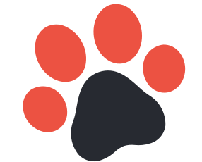

"How big do you want to be?"
Veterinary Congress in Leon 2020
The León Veterinary Congress (CVDL) is known to be one of the largest and most important events in the world. Thousands of Veterinarians and students from around the country and abroad, gather together in order to exchange ideas, expand knowledge and demonstrate their love for animals. It is a great opportunity for growth and professional development that no veterinarian should miss.
2020.09.2(TUE) ~ 5(SAT)
@Poliforum León, Mexico
Main Program
-
Scholarships
Need support for the event? Get in touch with us
-
Packages
Silver and Gold packages. Choose yours depending on your needs
-
Open Work
Read the guidelines to present your research work
-

Concerts
Mexican music at the end of the day
-

2019 Edition
Check out the previous congress
Feautured Speakers
-

Christopher Byers
Internal Medicine Specialist at VCA MidWest Veterinary Referral & Emergency Center
He is also an Adjunct Associate Professor at Kansas State University's College of Veterinary Medicine.
-

Anthony Gonzalez
Graduate of Cornell University and Doctor of Veterinary Medicine from Tuskegee University
He has expertise in both emergency care and in managing critical patients. His special clinical interests are focused on pulmonary medicine and trauma.
-

Andrew Linklater
Serves on the board of the Milwaukee Veterinary Medical Association
His Special areas of interest are Trauma, surgical emergencies, and mechanical ventilation.
-
Leo Londoño
Clinical assistant professor at the Department of Small Animal Clinical Sciences in Florida
His areas of interest are Emergency and Critical Care.
-

Paulo Steagall
Associate professor of Veterinary Anesthesiology and Pain Management at the Université de Montréal
He is currently the head of a research laboratory dedicated to improving the standards of pain management in companion animals with a strong benefit to animal welfare.
-
Luis Tello
Chief of Staff at Banfield Pet Hospital
He specialices in Small Animal Veterinary Medicine, Emergency and Intensive Care.